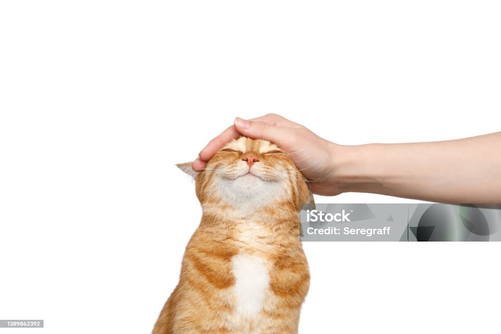
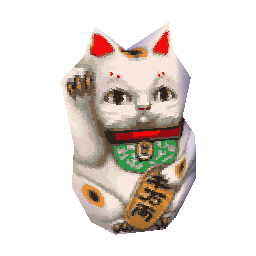
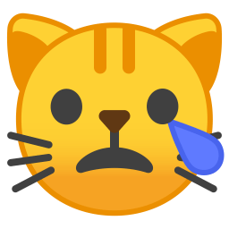
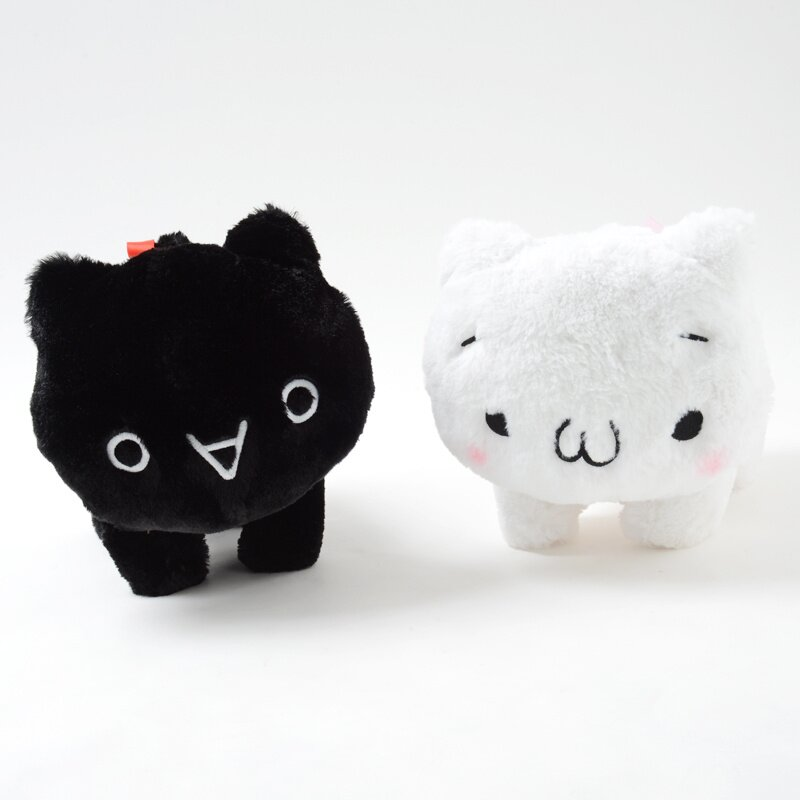

my top fives
top 5 bucket list countries to visit
- Japan
- Mexico
- Sweden
- Italy
- Romania
i've always wanted to visit japan since when I was little. I want to go to Mexico to visit my family. for Sweden and Romania, I've wanted to visit there because I have an online friend that is from these countries. For Italy, I've wanted to go there mainly to get a tattoo by my favorite artist but I wouldn't mind doing some sightseeing there.
favorite sweets
I've always loved chocolate throughout my life, so I definitely love chocolate and chocolate cakes in general. My favorite boba flavor is Jasmine because it tastes natural yet sweet. I'm a fan of matcha green tea, so a mochi green tea is always my first pick in terms of mochi flavors to choose from. Lastly, but not least, I can't go wrong with munching Pocky while doing assignments. They are one of the best snacks as well.
top five cat images
- 
- grinning orange cat getting petted

- cat wrapped in parchment paper like a burrito
- 
- lucky cat from animal crossing wild world
- 
- sad cat emoji
- 
- kaomoji cat plushies
my favorite animal are cats. cats thrive in different forms such as via emojis, video games, stuffed animals and of course, in real life. i always like to show appreciation to cats.